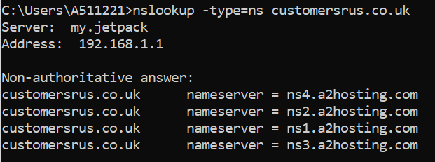
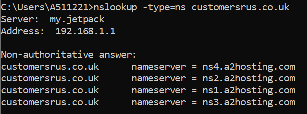

Artefacts

Collaborative Learning Discussion 1
Discussion Topic
Reading the paper Compromising a Medical Mannequin.Discuss What are the major threats and vulnerabilities discussed in the paper? How would you mitigate against these?.
Initial Post
Data breach in the health care sector is one of the highest targets in the past eleven years (Greenlee, 2021). Zorz (2021) mentioned that most of the data breaches in the healthcare industry were by hackers and improper security. The research “Compromising a Medical Mannequin” by (Glisson et al., 2015) examines the possibility of breaching simulation devices used for medical training.
The research focuses on attacking the connection between the simulation device and the computer which are used for controlling, the major threats highlighted by the research are brute force attack and denial of service attack. The main goal was to assess if students with basic background could succeed in medical device vulnerability assessment with basic tools and limited time. They used tools that are not difficult to acquire or sophisticated, BackTrack5 is used to achieve the brute force denial of service attacks. In less than three hours they successfully got the Access point PIN, password, and name (SSID). Moreover, they carried out a DoS attack and successfully cut off the connection between the simulation device and the controller computer.
There are many methods to prevent brute force attacks such as using a strong password, limiting login attempts, using CAPTCHAs, and using Two-Factor authentication (Anon, 2019). The strong and long password will take a long time to crack. Denial of Service (DoS) attack aims to make an application, machine, or network inaccessible to users, Beaver (2017) highlighted that we never know if our devices will prevent the DoS attack until it happens, therefore we can minimize the risk by things such as firewall rule base analysis, fix known vulnerabilities by update firmware and keep devices operating system up to date, use a next-generation firewall or a DoS protection appliance, Ingress filtering which is a method to prevent suspicious traffic, and finally make a plan to minimize the impact and to fix the system.
References
Anon. (2019) What is a Brute Force Attack & How to Prevent Them. Available from: https://sucuri.net/guides/what-is-brute-force-attack/ [Accessed 13 November 2021].
Beaver, K. (2017) Preventing DoS attacks: The best ways to defend the enterprise. Available from: https://searchsecurity.techtarget.com/tip/Preventing-DoS-attacks-The-best-ways-to-defend-the-enterprise [Accessed 12 November 2021].
Glisson, W., Andel, T., McDonald, T., Jacobs, M., Campbell, M. & Mayr, J. (2015) Compromising a Medical Mannequin. Available from: https://arxiv.org/ftp/arxiv/papers/1509/1509.00065.pdf [Accessed 11 November 2021].
Greenlee, M. (2021) What Is the True Cost of a Health Care Data Breach?. Available from: https://securityintelligence.com/articles/cost-health-care-data-breach/ [Accessed 11 November 2021].
Zorz, Z. (2021) Healthcare cybersecurity: How to prevent the compromise of patient records? - Help Net Security. Available from: https://www.helpnetsecurity.com/2021/09/14/compromise-healthcare-records/ [Accessed 12 November 2021].
Peer Response 1
Thank you, Jonathan, for your informative post, you provide an excellent point about education and training how they are an important factor for countermeasure the threats in the cyber security age. Having a good and comprehensive IT security policy is a good thing, however, this is not enough if the people lack cyber security awareness and know what the risks and consequences are, therefore, without educating your employee about such as malware and their capabilities to harm the system, preventing them to be spread on the network will be a challenge (Sungard Availability Services, 2021).
It is needed to change all device's default usernames and passwords. The mirai botnet attack which is a DDoS attack in October 2016 in a simple way was able to gain access to many of CCTVs, Cameras, and routers that were connected to the Internet by trying login with default user and password, which are equipped with devices as default (Fruhlinger, 2018).
References
Fruhlinger, J. (2018) The Mirai botnet explained: How IoT devices almost brought down the internet. Available from: https://www.csoonline.com/article/3258748/the-mirai-botnet-explained-how-teen-scammers-and-cctv-cameras-almost-brought-down-the-internet.html [Accessed 20 November 2021].
Sungard Availability Services. (2021) Educate employees to reduce cyber incidents. Available from: https://www.sungardas.com/en-us/blog/educating-employees-on-cyber-security [Accessed 21 November 2021].
Peer Response 2
Thank you Zihaad for your valuable post, you mentioned here an important view to threats such as no logging or failure detection and transferring of data in plain text through the network. In addition, locking the devices in a secure place to keep them away from ant unauthorized persons is crucial.
Firch (2021) highlighted keeping operating systems and software up to date as software developers deploy patches to fix bugs or remediate the discovered vulnerabilities to maintain the security of software or system at all, moreover, changing default operating system policies for example default domain password policy such as enforce password history, maximum password age, minimum password length, password complexity requirement, and store password using encryption will improve the security and used as mitigation of threat and vulnerabilities of health devices.
The adoption of zero-trust architecture moves network security toward a model that allows restricted access to the application, network, and environment (Salvi, 2021). Keeping IT infrastructure secure by restricting access to only authorized persons can be the first door of defense against the unwanted intruder.
References
Firch, J. (2021) What Are The Common Types Of Network Vulnerabilities. Available from: https://purplesec.us/common-network-vulnerabilities/ [Accessed 22 November 2021].
Salvi, V. (2021) Cyber Vulnerability is Healthcare’s Modern Malaise - ET HealthWorld. Available from: https://health.economictimes.indiatimes.com/news/health-it/cyber-vulnerability-is-healthcares-modern-malaise/86009989 [Accessed 22 November 2021].
Peer Response 3
Thank you, Tylor, for this attractive post, you highlighted mitigations such as using a complex password, limiting the login attempts, and using CAPTCHA as mitigation to prevent brute force attacks which is a good security solution. In addition, physical attack for medical devices is one of the threats, whereas, medical devices can be damaged by someone have access to steal the device itself or its storage to get patient vital information or can be damaged by a natural disaster, therefore, access to the device must be restricted and need to be authenticated and authorized to get permission to access the medical device information or physical (Oh et.al, 2021).
The adoption of zero-trust architecture moves network security toward a model that allows restricted access to the application, network, and environment (Salvi, 2021). Keeping IT infrastructure secure by restricting access to only authorized persons can be the first door of defense against the unwanted intruder.
References
Oh, S.R., Seo, Y.D., Lee, E. & Kim, Y.G. (2021) A Comprehensive Survey on Security and Privacy for Electronic Health Data. International Journal of Environmental Research and Public Health, 18 (18): 9668. Available from: https://www.mdpi.com/1660-4601/18/18/9668 [Accessed 23 November 2021].
Vaghela, A. (2021) Importance of Cybersecurity in Healthcare and Medical Devices. Available from: https://www.einfochips.com/blog/importance-of-cybersecurity-in-healthcare-and-medical-devices/ [Accessed 23 November 2021].
Peer Response 4
Thank you, Muhammed, for your informative post, you focused on limiting login attempting as a mitigation process to prevent brute force attacks which were good.
Forescout research labs (2020) highlighted that the potential threats for a medical device are three categories which are external threats such as individual cybercriminals or criminal groups, internal threats such as staff, vendors, and contractors, and the third is a legacy system, default password, and improperly secured devices, therefore, as mitigation, they mentioned that network segmentation as an essential to limit attack surface by applying VLANs, Access Control List, and subnetting, however, even VLAN applied and the medical devices poorly configured with a default password that will lead to compromise the segment.
In addition, the interesting finding in Forescout research labs (2020) report is that the common medical protocols such as HL7, DICOM, and POCT01 were insecure and the traffic in clear text, in their lab experiment they could dump test results, change test results and abort connection of patient monitor, therefore, as mitigation using secured protocol or encryption technique would minimize the risk.
References
forescout (2020) Connected Medical Device Security: A Deep Dive into Healthcare Networks. Available from: https://www.forescout.com/resources/connected-medical-device-security-a-deep-dive-into-healthcare-networks/ [Accessed 24 November 2021].
Summary Post
Forescout (2021) detailed 13 critical vulnerabilities disclosed in the nucleus TCP/IP stack which is owned by Siemens company, which is widely used healthcare and hospitals devices such as patient monitor, anesthesia machines, ultrasound devices, and other devices, which will affect millions of devices.
In the first peer response, Necat (2021) suggests for ensuring long-term security end users must be trained and get knowledge about the suspicious behavior to be able to discover the successful compromise, which is a good viewpoint which healthcare industry needs to focus on. In addition, Khan (2021) mentions crucial mitigation aspects which are using insecure HTTP protocol is a risk because the data moved without encryption, instead he suggests using HTTPS, and the device and database need to be physically secure to prevent unauthorized physical access. On other hand, Qasim (2021) highlights that no perfect system and suggests rising professional awareness and continuous learning will help safeguard data.
Keeping operating systems and applications up to date to ensure that all bugs and discovered vulnerabilities are fixed, as well as, changing the operating system default security policies such as maximum age, length, complexity, and encryption of passwords are crucial mitigation to keep the network secured (Firch, 2021). In addition, the Mirai botnet attack in 2016 where attackers gain access to many IoT devices connected to the Internet such as CCTV, cameras, and routers in a simple way which is using the default username and password for the devices and not changed (Fruhlinger, 2018).
In conclusion, to ensure the security of medical devices and protect patient data to be breached and to secure the healthcare industry, many institutions/organizations such as hospitals, medical device manufacturers, system developers, communication protocols, and networks manufacturers must cooperate together, in addition, applying policies and procedures that regulate work alongside with educating users about the risks they will face in the field of cybersecurity.
References
Firch, J. (2021) What Are The Common Types Of Network Vulnerabilities. Available from: https://purplesec.us/common-network-vulnerabilities/ [Accessed 22 November 2021].
Fruhlinger, J. (2018) The Mirai botnet explained: How IoT devices almost brought down the internet. Available from: https://www.csoonline.com/article/3258748/the-mirai-botnet-explained-how-teen-scammers-and-cctv-cameras-almost-brought-down-the-internet.html [Accessed 27 November 2021].
Khan, Z. (2021) Peer Response. Available from: https://www.my-course.co.uk/mod/hsuforum/discuss.php?d=285128 [Accessed 25 November 2021].
Necat, B. (2021) Peer Response. Available from: https://www.my-course.co.uk/mod/hsuforum/discuss.php?d=285128 [Accessed 25 November 2021].
Qasim, M. (2021) Peer Response. Available from: https://www.my-course.co.uk/mod/hsuforum/discuss.php?d=285128 [Accessed 25 November 2021].
Discussion1_Received_Responses
Post by Beran Necat
Hi Haseeb,
Many thanks for your input. Good analysis.
One other mitigation that I would also suggest would be education / training of users of the device itself. Unfortunately, data breaches / cyber incidents can take minutes to compromise successfully; however, can take months or more to discover. This mitigation is necessary to ensure the security of the devices in the long term. Unfortunately, many end-users may not know what to look for or what could be deemed suspicious behaviour, so educating them expands the oversight security professionals have.
Regards, Beran
-------------------------------------------------------------------------------------------
Post by Zihaad Khan
Hi Haseeb
Thank you for your post. You have provided some great mitigation techniques.
In addition, if we take a closer look at the Muse software and the way it communicates with the iStan device, this is done over http which is insecure. This is where encryption in transit comes in by making use of HTTPS. HTTPS is simply HTTP with encryption. HTTPS uses TLS (Transport Layer Security) to encrypt HTTP requests and responses (Digicert, 2021). Vendors manufacturing medical devices that support web-based connectivity needs to ensure that encrypted protocols are supported. Furthermore, if TLS is used, the latest version of TLS should be implemented to avoid POODLE and BEAST attacks (Sheffer, 2015).
Another aspect to consider is physical brute-force where malicious users are granted physical access to medical devices that are not securely stored and/or locked. If attackers gain access to these devices, they can extract the physical disk and obtain patient information (Wang et al., 2020). If locking the device is not possible one should consider storage encryption or encryption at rest, in this way if the attacker gains access to the physical disk, it will be very difficult to decrypt and extract sensitive patient information (Wang et al., 2020).
List of References
Digicert (2021) What is SSL, TLS & HTTPS? https://www.digicert.com/what-isssl-tls-and-https [Accessed 20 November 2021]
Wang, Z., Ma, P., Zou, X., Zhang, J., & Yang, T. (2020) ‘Security of Medical Cyber-physical Systems: An Empirical Study on Imaging Devices’, IEEE INFOCOM 2020 - IEEE Conference on Computer Communications Workshops. Canada, 6-9 July 2020. USA: IEEE. Available from: https://ieeexplore.ieee.org/document/9162769 [Accessed 20 November 2021]
Y. Sheffer, R. Holz & P. Saint-Andre. (2015) Summarizing Known Attacks on Transport Layer Security (TLS) and Datagram TLS (DTLS). Internet Engineering Task Force (IETF). Available from: https://tools.ietf.org/html/rfc7457 [Accessed 20 November 2021]
--------------------------------------------------------------------------------------------
Post by Muhammad Qasim
Thank you for the great discussion, A good job on the topic. From the post, one understands the issue regarding data breaches in healthcare in the first paragraph. Most healthcare organizations have various types of specialized hospital information systems to manage prescriptions, reports, bills, scans, x-rays, medicine orders, inter department liaisons. There is a necessity that healthcare leaders need to be extra equipped to increase spending on cybersecurity. With new threats being uncovered every day, it is exhausting to recognize where an organization would be better off investing its budget. The post has a good thesis statement that talked about what will be discussed in the post. Well done! The post discusses the main goal of the project. The study focuses on targeting the link between the simulation device and the computer that controls it. The research highlights two key threats: brute force and denial of service attacks as detailed in the post. However, the post did not define brute force and DoS attacks.
Proper research and description of terms will aid in a higher quality post. The post, however, discussed various methods to prevent these attacks. There are no perfect systems and digital vulnerability in healthcare data exchange is not an exception. Luckily it is still possible to make gaining access to your communication less easy. Cybercriminals’ targets are weak and non-encrypted systems, as a rule, and criminal threats, unfortunately, continue to evolve (McLeod and Dolezel, 2018). To stay ahead, healthcare professionals must improvep culture and awareness about what is going on to help to safeguard patient data.
References
McLeod, A. and Dolezel, D., 2018. Cyber-analytics: Modeling factors associated with healthcare data breaches. Decision Support Systems, 108, pp.57-68.
Collaborative Learning Discussion 2
Discussion Topic
Discuss the results of the scans activity with Group3 team members.Initial Post
The website https://customersrus.co.uk is assigned to group 3, as required in unit 3 practical activity to carry out a scanning exercise and perform a basic scan.
By using a Windows 10 machine to perform the scan from Yemen. At the first, we used the CMD command which is (tracert) to find out how many hops and delays from our machine to the website. We found that three different results by team members from different locations and ISPs. From my laptop, it was 15 hops to the destination, with the maximum delay on hop 7 which is 533 ms on average. However, in hop 2 and hop 4, there was no response, and got “Request time out”. The results do not change with the use of WinMTR tool, the hops were the same, but the delay is reduced to 186 ms.
NSLOOKUP command used to find website IP address (68.66,247.187), in addition, by adding this parameter to the previous command (-type=ns) we found that four name servers which are ns1.a2hosting.com, ns2.a2hosting.com, ns3.a2hosting.com, and ns4.a2hosting.com. Moreover, adding another parameter to NSLOOKUP command which is (-q=MX) to find out the MX record (mail.customersrus.co.uk).
Because the lake of command such as WHOIS in Windows 10, therefore, whois.com online website was used to find the website registrar and confirm the name servers, the result shows that the registrar is ENOM (WHO.IS, 2021). In addition, using ICANN LOOKUP online website to find out the registered contact, the results show that contact information is A2 Hosting, Inc. organization which is based in Ann Arbor, Michigan, USA (ICANN, 2021). Finally, to determine the location it has done by using two online websites (findip-address.com and nslookup.io) the results were different they showed that the website was hosted by A2Hosting in Chicago, USA, and in Amsterdam, Netherlands in sequence (Findip-address, 2021 and Nslookup.io, 2021).
In summary, to get complete information about the website we need to perform and use many tools not depend on one tool, moreover, the assigned website uses four name servers which will be useful against attacks such as DoS, if one fails then the other will be available (Nutter, 2003).
References
Findip-address (2021) Find IP Address - Lookup and locate an ip address. Available from: https://www.findip-address.com/ [Accessed 4 December 2021].
ICANN (2021) ICANN Lookup. Available from: https://lookup.icann.org/lookup [Accessed 3 December 2021].
Nslookup.io (2021). Available from: https://www.nslookup.io/dns-records/customersrus.co.uk [Accessed 4 December 2021].
Nutter, R. (2003) How many DNS servers do I need?. Available from: https://www.networkworld.com/article/2335470/how-many-dns-servers-do-i-need-.html [Accessed 5 December 2021].
WHO.IS (2021) customersrus.co.uk whois lookup. Available from: https://who.is/whois/customersrus.co.uk [Accessed 4 December 2021].
 

Peer Response 1
Thank you, Muhammed for the formative post. Using nslookup command with the parameter -q=MX to find out the mail exchange server (MX), the result shows that the mail exchange is mail.customer.srus.co.uk. in addition, the same command with another parameter (-type=ns) to find the name server, in our case there are four name servers which are ns1.a2hosting.com, ns2.a2hosting.com, ns3.a2hosting.com, and ns4.a2hosting.com (Peychev,2021).
With the limitation of the Windows operating system with pre-installed tools, therefore, we can use an online tool to find out the location, registrar, and hosting. Online tools such as https://lookup.icann.org/, https://who.is/, and https://www.findip-address.com/ which we used to get the above information.
References
Peychev, B. (2021) 10 most used Nslookup commands. Available from: https://www.cloudns.net/blog/10-most-used-nslookup-commands/ [Accessed 12 December 2021].
Peer Response 2
Thank you, Austin for the informative post. PEYCHEV (2021) highlighted that nslookup is a powerful command-line tool for network administration, it can be used to get information such as domain names, IP address, mail exchange (MX), and name servers records, nslookup comes in software as a command line and as online tool https://www.nslookup.io/dns-records . By trying this command >> nslookup -type=any allmytype.co.uk, we got information about the mail exchange (mail.allmytype.co.uk), IP address (68.66.247.187), hosting (a2hosting.com), and name servers (ns1.a2hosting.com, ns2.a2hosting.com, ns3.a2hosting.com, and ns4.a2hosting.com).
References
Nslookup.io (2021). Available from: https://www.nslookup.io/dns-records/allmytype.co.uk [Accessed 13 December 2021].
Peychev, B. (2021) 10 most used Nslookup commands. Available from: https://www.cloudns.net/blog/10-most-used-nslookup-commands/ [Accessed 12 December 2021].
Summary Post
The website https://customersrus.co.uk is assigned to group 3, as required in unit 3 practical activity to carry out a scanning exercise and perform a basic scan.
The scanning was done by using Windows 10 operating system from Yemen. First, starting with basic tools such as traceroute (tracert) and nslookup which are commands through CMD. The results are compared to other team members (Group 3), we found that three different results by team members from different locations and ISPs. From my laptop, it was 15 hops to the destination, with the maximum delay on hop 7 which is 533 ms on average. However, in hop 2 and hop 4, there was no response, and got “Request time out”. The result does not change with the use of WinMTR tool, the hops were the same, but the delay is reduced to 186 ms.
Using nslookup command with the parameter -q=MX to find out the mail exchange server (MX), the result shows that the mail exchange is mail.customersrus.co.uk. in addition, the same command with another parameter (-type=ns) to find the name server, in our case there are four name servers which are ns1.a2hosting.com, ns2.a2hosting.com, ns3.a2hosting.com, and ns4.a2hosting.com (Peychev,2021). Qasim (2021) highlighted that nslookup tool is deprecated and it is important to find out a modern alternative.
To overcome the challenges of availability of pre-installed tools in Windows 10, therefore, we used online tools such as https://lookup.icann.org/, https://who.is/, and https://www.findip-address.com/to find out the location, registrar, and hosting. Mundy (2021) suggested DIG tool as a good alternative to nslookup which will provide the IP address, name servers, and mail server in one command, in addition, using Linux command “whois” to find out the registered contact.
In summary, to get complete information about the website we need to perform and use many tools not depend on one tool, moreover, the assigned website uses four name servers which will be useful against attacks such as DoS, if one fails then the other will be available (Nutter, 2003).
References
Findip-address (2021) Find IP Address - Lookup and locate an ip address. Available from: https://www.findip-address.com/ [Accessed 4 December 2021].
ICANN (2021) ICANN Lookup. Available from: https://lookup.icann.org/lookup [Accessed 3 December 2021].
Mundy, A. (2021). Peer Response NISM Collaborative Learning Discussion 2. Available: https://www.my-course.co.uk/mod/hsuforum/discuss.php?d=289337 [Accessed 16 December 2021].
Nslookup.io (2021). Available from: https://www.nslookup.io/dns-records/customersrus.co.uk [Accessed 4 December 2021].
Nutter, R. (2003) How many DNS servers do I need?. Available from: https://www.networkworld.com/article/2335470/how-many-dns-servers-do-i-need-.html [Accessed 5 December 2021].
Peychev, B. (2021) 10 most used Nslookup commands. Available from: https://www.cloudns.net/blog/10-most-used-nslookup-commands/ [Accessed 12 December 2021].
Qasim, M. (2021). Peer Response NISM Collaborative Learning Discussion 2. Available: https://www.my-course.co.uk/mod/hsuforum/discuss.php?d=289337 [Accessed 16 December 2021].
WHO.IS (2021) customersrus.co.uk whois lookup. Available from: https://who.is/whois/customersrus.co.uk [Accessed 4 December 2021].
Discussion2_Received_Responses
Post by Beran Necat
Hi Haseeb,
A good summary of the initial investigation phase, and some good explanation of the tools used by the group through the scanning process.
Regards, Beran
-------------------------------------------------------------------------------------------
Post by Austin Mundy
Thank you for your post, you provided some insightful information. The fifteen hops to the destination match the results of several others (Microsoft, 2021). However, the other results of the traceroute were quite different. The overall latency of the three packets was at a much higher latency and varied quite a lot. The dropped packets in hops two and four indicate an exceeded TTL (Parziale et al, 2006). However, the rest of the packets were successful, albeit with high latency. Which could just be the result of where the user is located. Generally, unless the packets drop right at the end or there is a constant increase in latency then it is okay.
The nslookup provided the expected results of four different name servers. Alternatively, Dig could have been used instead. Dig is a more robust tool that also provides a bit more functionality. Instead of having to use other subcommands, a “Dig Any”, will provide name servers, mail servers, and their IP addresses, in an all in one command. Similarly, another Linux command that could be used is the “Whois”. It provides the registered contact through a basic command. As you stated it is also good to use external websites sometimes instead. Commands have a learning curve and don’t always provide what you want to see. Instead, it is better to use something with an easier interface, that way you get the correct results.
References:
Microsoft. (2021) How to Use TRACERT to Troubleshoot TCP/IP Problems in Windows. Available from: https://support.microsoft.com/en-us/topic/how-to-use-tracert-to-troubleshoot-tcp-ip-problems-in-windows-e643d72b-2f4f-cdd6-09a0-fd2989c7ca8e [Accessed 10 December 2021].
Parziale et al.(2006) TCP/IP Tutorial and Technical Overview. 8th ed. New York: IBM Redbooks. Available from: https://www.redbooks.ibm.com/redbooks/pdfs/gg243376.pdf [Accessed 11 December 2021].
--------------------------------------------------------------------------------------------
Post by Muhammad Qasim
Thank you for your post, Haseeb. You provided some insightful information. Your hop count was 15 hops, which seems to be slightly average when compared with other results. Two of your hops, that is, hop 2 and hop 4, indicated no response and got “Request time out.” In addition, your results indicated no change when the scan is performed using different Windows MTR tool (CISA, 2010). However, the delay reduced from 533ms to 186ms with the hops remaining the same. The NSLOOKUP command too you used to find the website IP address is a very tool that enabled you to find the names of your four servers (Parziale et al., 2006). However, the tool is technically deprecated so it is important to consider other modern and reliable alternatives.
Recognizing the different names of serves was a very interesting idea. As you stated, this will help fight against attacks such as Dos (Mahjabin et al., 2017).
References
CISA.(2010) Understanding Denial-of-Service Attacks. Available from: https://www.cisa.gov/uscert/ncas/tips/ST04-015 [Accessed 11 December 2021].
Mahjabin, T., Xiao, Y., Sun, G. and Jiang, W., 2017. A survey of distributed denial-of-service attack, prevention, and mitigation techniques. International Journal of Distributed Sensor Networks, 13(12), p.1550147717741463.
Parziale et al.(2006) TCP/IP Tutorial and Technical Overview. 8th ed. New York: IBM Redbooks. Available from: https://www.redbooks.ibm.com/redbooks/pdfs/gg243376.pdf [Accessed 11 December 2021].
Collaborative Learning Discussion 3
Discussion Topic
Read the website at Data Protection Commission (2020) Case Studies|DataProtection Commission Available from: https://dataprotection.ie/en/pre-gdpr/case-studiesDiscuss What is the specific aspect of GDPR that your case study addresses? How was it resolved? If this was your organisation what steps would you take as an Information Security Manager to mitigate the issue?
Initial Post
The case study “Cunniffe Electric Limited.” highlighted that the company violated the GDPR regulation. As someone compliant that he received unsolicited marketing text messages without giving the consent to add his phone number to the marketing database. After the first complaint, the company remove his number from the marketing database, however, he got another marketing message. The company said that happened because of an error because the service provider part went to a third-party company. The data protection commissioner decided that Cunniffe Electric Limited entered the guilty plea as they warned the first time. Instead of paying a fine, the court asked to make a 500 Euro as a contribution for court poor box, which is agreed by the company (Data Protection Commission, N.D.).
Phone numbers and email addresses which are collected for delivery purposes cannot be used for marketing purposes without the consent of their owners, whereas, obtaining a valid consent to send marketing text messages or emails to customers, otherwise, the companies breach the marketing regulation (DPC Annual Report, 2017).
Organizations or companies which have electronic marketing activities should check and test their marketing database to ensure that it has up-to-date and valid consent of all customers in their database, moreover, provide the opportunity to opt-out of receiving any kind of marketing communications (Hosford, 2017).
References
DATA PROTECTION COMMISSION (N.D.) Case Studies | Data Protection Commission. Available from: https://dataprotection.ie/en/pre-gdpr/case-studies [Accessed 23 January 2022].
DPC Annual Report (2017) DPC Annual Report. Available from: https://www.dataprotection.ie/sites/default/files/uploads/2018-11/Annual%20Report%202017.pdf [Accessed 23 January 2022].
Hosford, P. (2017) Argos and Virgin Media among companies prosecuted for wrongly sending marketing texts, calls and emails. Available from: https://www.thejournal.ie/argos-marketing-emails-virgin-media-3499614-Jul2017/ [Accessed 23 January 2022].
Summary Post
The case study “Cunniffe Electric Limited.” highlighted that the company violated the GDPR regulation. As someone compliant that he received unsolicited marketing text messages without giving the consent to add his phone number to the marketing database. After the first complaint, the company remove his number from the marketing database, however, he got another marketing message. The company said that happened because of an error because the service provider part went to a third-party company. The data protection commissioner decided that Cunniffe Electric Limited entered the guilty plea as they warned the first time. Instead of paying a fine, the court asked to make a 500 Euro as a contribution for court poor box, which is agreed by the company (Data Protection Commission, N.D.).
Necat (2022) mentioned that fines only will not make companies change their policies and regulations and comply to the GDPR regulations but, also respects individual’s privacy and rights is needed as principles for them. Companies as controller or Processor for data are responsible for data protection and regulation, therefore, third party company also should comply the GDPR regulations, in addition, companies should hire an experience people to avoid human errors and conduct some training for their available staff, moreover, companies have to secure their system to protect private information (Callaghan, 2022).
In e-marketing field, companies should ensure that the database is always up to date, valid consent before adding customers to marketing database, and customers have a clear opportunity and easy process to opt-out of marketing communications (Hosford, 2017).
References
Callaghan, J. (2022). Peer Response NISM Collaborative Learning Discussion 3. Available: https://www.my-course.co.uk/mod/hsuforum/discuss.php?d=293055 [Accessed 5 February 2022].
DATA PROTECTION COMMISSION (N.D.) Case Studies | Data Protection Commission. Available from: https://dataprotection.ie/en/pre-gdpr/case-studies [Accessed 23 January 2022].
Hosford, P. (2017) Argos and Virgin Media among companies prosecuted for wrongly sending marketing texts, calls and emails. Available from: https://www.thejournal.ie/argos-marketing-emails-virgin-media-3499614-Jul2017/ [Accessed 23 January 2022].
Necat, B. (2022). Peer Response NISM Collaborative Learning Discussion 3. Available: https://www.my-course.co.uk/mod/hsuforum/discuss.php?d=293055 [Accessed 5 February 2022].
Discussion3_Received_Responses
Post by Beran Necat
Hi Haseeb,
Interesting post.
In situations such as these, not only should substantial fines be imposed that will make the companies change their approach and comply with both the spirit and letter of the GDPR regulations, but as you said, there also needs to be some principles that ensure the privacy and rights of individuals are respected.
Regards, Beran
-------------------------------------------------------------------------------------------
Post by Jonathan Callaghan
Thanks, Haseeb, for highlighting how companies need to comply with GDPR ensuring they have up to date marketing databases, valid consent, and consumers have the opportunity to opt-out of marketing communications. Companies that collect or control data known as controllers or those who process data known have processors all responsible for ensuring rules for data protection are followed (GDPR.EU, 2022). This relates to Articles 8, 11, 25-39 and 42-43 (Consulting., 2019), suggesting that even if Cunniffe Electrical Limited hired a third-party service provider, they still have a responsibility to ensure the GDPR rules are adhered to. Whilst the third party can be helpful as it may offer a more efficient service, the hirer is still the controller in this situation.
Whilst human error may have been at fault; it is crucial to recognize that effective scrutiny of the service providers history, experience and reputation is checked before hiring them. Staff training can be helpful to support procurement departments in the outsourcing process. A company can be heavily fined for such breaches, as in the Vodafone case in Italy, costing 12 million euros for a similar case example (Bincoletto, 2020). Furthermore, the company should effectively opt out of a policy with time frames and the offering right to be forgotten as you have highlighted. To manage the marketing emails more effectively Lau (2022) suggests encryption of data is crucial whereby any email or marketing that contains personal information must be encrypted. The data controller or processor should utilise a communication system that leverages secure servers and links to keep private information out of publicly shared information (Lau, 2022).
Bincoletto, G. (2020). Italian DPA against Vodafone: History of a 12 Million Fine. Available: https://heinonline.org/HOL/LandingPage?handle=hein.journals/edpl6&div=77&id=&page= [Accessed 29 January 2022].
Consulting., I. (2019). General Data Protection Regulation (GDPR) – Official Legal Text. Available: https://gdpr-info.eu/ [Accessed 11 August 2021].
GDPR.EU. (2022). What are the GDPR Fines? Available: https://gdpr.eu/fines/ [Accessed 29 January 2022].
Lau, V. (2022). GDPR Compliance & Email Marketing Available: https://www.kiteworks.com/secure- mail/email-gdpr/ [Accessed 29 January 2022].
E-Portfolio Activity
My Viewpoint
• What does the article teach you about carrying out vulnerability scans using Kali?
Understanding the target by gathering information about the targets such as hosts, domains, sub-domains, operating system, application version, and open ports.
Kali Linux has many tools which are used to gathering information, vulnerabilities as system analysis, and exploitation tools.
What issues might you encounter?
With using root user may damage system if altered a critical files or system become unstable. Some commands maybe harm the network if not understand the implications.
Some actions maybe turn out to be unlawful.
How would you overcome them?
Using test environment in virtual lab by using virtualization technique to guarantee that all tests done inside the lab not outside.
How do their results compare with your initial evaluation?
Netcat is a super powerful tool, which can be used to discover network hosts, scan ports, get operating system details, and application name and version.
Open VAS and Nikto are complete each other where open VAS used to explore network vulnerabilities, while Nikto used to perform web server penetration test.
What do you think of their criteria?
Enlisting the potentials vulnerabilities or threats, then list tools as per priority and criticality those from their side of view, therefore, maybe they missed a small or simple threat which may cause bad harm to the system.
It is good to do general weakness assessment along side with the purpose assessment. Otherwise, they need to use more tools to guarantee that the result is valid.
“Kali Linux is a well-respected collection of open source pen testing tools, including metasploit, nmap,
wireshark and sqlmap amongst many others. It has the benefit of being available as a ‘live distro’ which means
that there is no requirement to install it – it will run from a DVD or a USB/ thumb drive. For these reasons, we
recommend that Kali Linux is the tool of choice for this assignment.” (UoEO Computing Team, 2020.)
Based on your evaluation in the previous session and the articles above, consider the recommendation given
above:
What are the pros and cons of using Kali Linux vs. Nessus?
Pros:
Free
Kali can run from DVD or flash desk without be installed
Pre-installed package with more than 600 tools.
Cons:
Root user can be a potential threat if the Kali connected to exposed environment.
Some Kali commands can cause damage to your home network.
Need training because of many tools especially command tools.
Nessus Cons:
Commercial using
Has this changed your original evaluation score?
Yes, because I found that Kali Linux is a full package of most benefits tools in pen test field.
--------------------------------------------------------------------------------------------
Jonathan Viewpoint
• What does the article teach you about carrying out vulnerability scans using Kali?
• What issues might you encounter?
• How would you overcome them?
When considering Kali Linux, Leroux (2020) suggests that first time users may be cautious in their approach when using Kali unless they have specific needs. Kali Linux is not necessarily anything new or unique since the penetration testing tools available could be installed on any Linux distribution. However, what sets it apart is the ease of use for the user as tools are preinstalled even though some tasks maybe be found challenging due to this. Leroux (2020) continues to suggest there is a risk of using Kali from the onset as it is essential to verify you are not installed a compromised package; the fingerprint of the file checking the SHA-256 can support this verify the checksum. Another issue to consider is that you would need to run from root to use most tools. This could be risky if any files get deleted/edited accidentally or if the user shares the computer with others and there are no basic permissions on the machine, which could cause your system to be unusable. The orientation of applications is geared to security which means that large office applications are not part of the standard installation. The positive is that you can do anything as a root user, which means you could set your unprivileged accounts on the system. A key benefit of Kali is that its 'required to hide its presence on a network and harden itself from potential attacks' (Leroux, 2020). After installing packages, Kali may offer messages regarding concerns which is also a positive. A critical problem for installations is not becoming a FrankenDebian that can break the system. It is essential to use trusted sources and use Debian Stable. A more practical solution is to run Kali Linux in a virtual machine. This can allow you to practice your skills without causing harm to your system or activities.
Whilst reviewing Bhatt (2018), we can infer the importance of the usefulness and flexibility of Kali Linux. The wide array of pen-testing utilities and the benefit of applying skills in a virtualised environment (Bhatt, 2018) supports Leroux (2020) findings. A concern without a virtual lab would be that test scans and data could flow out to the internet, and the snapshot tools can recover lab work whilst eliminating footprints of malicious activity. Kali offers an adaptable framework to personalise peoples needs. The applications submitted are extensive and can be configured with applications such as Metasploit. The assessment tools can be carried out on anti-virus systems and firewalls so that results are accurate and useful. The challenge is that users could leave themselves vulnerable, as mentioned in the first article.
• How do their results compare with your initial evaluation?
• What do you think of their criteria?
After reviewing Bhingardeve & Franklin (2018), when comparing my initial evaluation, the first enlightenment has more tools than I had expected. This offers far greater scope to assess and test defensive and offensive security capabilities (Bhingardeve & Franklin, 2018). I was only aware of four of the six tools, and it was surprising to see that Nmap topped the list. From the list of tools and research, I would have considered Metasploit to top that list. Concerning the criteria used, there are many aspects the same; however, this evaluation focuses on social interaction such as popularity, acclamation, support, and documentation. In the initial assessment, popularity was an extra addition considered in the research. The limitation of the criteria would be regarded as when some requirements are vague such as 'Easy' and 'Free' (Bhingardeve & Franklin, 2018). The 'Easy' does not give us an insight into whether this is easy to install or ease of use, making the initial evaluation stronger in comparison. The 'Free' aspect does not consider whether it is a community edition, open-source, completely free, or a paid version of the tools. Overall the comparison table is helpful as it offers a slightly different perspective and variation of tools however parts could be made more explicit in defining criterion key terminology.
• What are the pros and cons of using Kali Linux vs. Nessus?
• Has this changed your original evaluation score?
When evaluating Kali Linux and Nessus, there are valid arguments for both. The benefits for Nessus are that it is incredibly accurate with the industry's lowest false positive rate, broad coverage concerning CVE's and plug-ins and is very popular amongst organisations globally (Tenable, 2021). Nessus can quickly transfer licenses between computers, providing clients with customisable reports after each complete assessment. Reports can provide detailed feedback that can priortitse risk and vulnerabilties whilst providing pre-built policies and templates to maximise the efficiency and time of the security practitioners offering a comprehensive service. The limitations of Nessus are that to have this complete package, there is a significant expense.
Tenable (2021) suggests that 50% of the Fortune 500 and 30% of the Global 200 companies rely on Nessus technology. Therefore security practitioners will require some form of knowledge and understanding of using this tool. Furthermore there are additional costs should you need expertise and traning on how to maximise the performance of Nessus. Therefore for small to medium-sized companies, this expense may not be on their priority budget list and may price business out of the market for
this tool.
Kali Linux offers a different perspective. The first benefit would be the pre-packaged solution offering a platform with numerous tools to complete practical penetration testing assessments. Furthermore, the pre-packaged approach offers open-sourced community editions which means that most services are free, providing access to all. Kali Linux will provide an excellent platform for students to learn and develop skills and, through the use of a virtual box, can practice without the risk of doing irreparable damage to the computer system. The limitations of this are that inexperienced users will take more time to become accustomed to the tools and will not have the timesaving options of customisable reports generated by Nessus. Kali Linux may not have the convenience and and well organised interface that Nessus offers but it be a great solution for security practicioners to learn and assess security policies and practices. The UoEo Computing Team (2020) recommends Kali Linux as the chosen tool, a reasonable assumption.
This did change my evaluation score as I would rate Kali Linux higher now due to understanding the benefits and practicalities of using the all in one platform.
Bhatt, D. (2018). Modern Day Penetration Testing Distribution Open Source Platform - Kali Linux - Study Paper. . International Journal of Scientific & Technology Research, 7, (4): 233-237.
Bhingardeve, N. & Franklin, S. (2018). A Comparison Study of Open Source Penetration Testing Tools. . International Journal of Trend in Scientific Research and Development 2, (4): 2595-2597.
Leroux, S. (2020). The Kali Linux Review You Must Read Before You Start Using It.
It's FOSS. . Available: https://itsfoss.com/kali-linux-review/ [Accessed 15 January 2022].
Tenable. (2021). Nessus Professional. Available:
https://static.tenable.com/marketing/datasheets/DataSheetNessus_Professional.pdf [Accessed 16 January 2022].
--------------------------------------------------------------------------------------------
Yin Viewpoint
• What does the article teach you about carrying out vulnerability scans using Kali?
Gathering and understanding the target information
Dmitry is a deep magic information gathering tool used to identify
Test on the exploits and other attacks
• What issues might you encounter?
The assessment needs to be carried out on anti-virus and firewalls systems to get the precise final result.
Security system might prevent the penetration testing of WAF
• How would you overcome them?
Clone the system and test it without a security system
• How do their results compare with your initial evaluation?
Mostly the same
• What do you think of their criteria?
Better to quantify the criteria instead of Yes/ No.
• What are the pros and cons of using Kali Linux vs Nessus?
Kali Linux pros: It is capable of running it “live” from a USB drive / DVD, including most of the common free tools.
Kali Linux cons: Required Linux and system knowledge.
Nessus pros: Provided plugins for most of the vulnerabilities. It is easy to use and can run the scan in a large scale by scheduling.
Nessus cons: It is not actively prevented attacks but a tool that checks your computers to find vulnerabilities that are exploited.
• Has this changed your original evaluation score?
Kali Linux should be the most powerful tool to cover the penetration testing process. The initial evaluation was based on different criteria, which balanced from the typical user point of view. It should include accuracy, exploit discovered rate, etc., which had most common free tools and the capability to install and customise.
--------------------------------------------------------------------------------------------
Practical Activity - Scanning Exercise
Discuss the results of the scans with group 3 team members.
Scanning Results
Team Activity: Debate
Group 3 opening arguments in support of (MobilityFirst).
My Argument
MobilityFirst separates the names from network addresses to overcome an inefficient of current Internet IP address, such that makes mobile devices ability of mobility and multi-homing while they connect simultaneously to multiple networks, in addition, in case of network problems such as bad connectivity because transmission of data between slow and fast network, therefore, MobilityFirst store data I router temporary to deliver the data efficiently (Ullah et.al., 2020).
Related to security, to protect privacy and enhance sender/receiver anonymity, MobilityFirst separates the human name which is readable from the network address (Ullah et. al.,2020).
References
Ding, W., Yan, Z. & Deng, R. (2016) A Survey on Future Internet Security Architectures. IEEE Access, 4: 4374-4393. Available from: https://ieeexplore.ieee.org/document/7526334 [Accessed 14 February 2022].
Ullah, A., Chen, X. & Yang, J. (2020) Design and Implementation of MobilityFirst Future Internet Testbed. IEEE. Available from: https://ieeexplore.ieee.org/abstract/document/9350857 [Accessed 14 February 2022].
--------------------------------------------------------------------------------------------
Jonathan Argument
MobilityFirst’s fundamental goal is trustworthiness, with a scalable name service design and Globally Unique Identifier to enhance security. MobilityFirst aims to improve the current internet architecture by allowing the resumption of downloads when a device moves and strengthening mobile and wireless networks.
For security, NetFence supports DoS attacks using networks than end systems. This adopts caching to achieve high performance on data delivery, and with IoT can lower control overhead with an acceptable performance and packets success rate. Separation of names and network addresses for increased mobility. (Su et al., 2015) MobilityFirst can easily construct end-to-end communications (Raychaudhuri et al., 2012).
Raychaudhuri, D., Nagaraja, K. & Venkataramani, A. (2012). MobilityFirst. ACM SIGMOBILE Mobile Computing and Communications Review, 16, (3): 2-13.
Su, K., Bronzino, F., Ramakrishnan, K. K. & Raychaudhuri, D. (2015). MFTP: A Clean-Slate Transport Protocol for the Information Centric Mobilityfirst Network. Proceedings of the 2nd ACM Conference on Information-Centric Networking. San Francisco, California, USA: Association for Computing Machinery.
--------------------------------------------------------------------------------------------
Yin Argument
The future of the Internet is based on the MobilityFirst architecture in my viewpoint.
Seamless connectivity is important for the universalness usage on mobile devices and the Internet of Things (IoT). Besides the high confidentiality compared with Content centric networking (CCN) and Peer-to-peer overlay-based networking (Ding et al, 2016), Caching is also used by MobilityFirst to enhance network performance. Moreover, MobilityFirst could support seamless connectivity efficiently compared to others.
MobilityFirst network architecture differentiates the human-readable names with corresponding Global Unique Identifiers (GUIDs) and network addresses (NA) (Ding et al, 2016). Breakthrough the limitation of NA to provide new multicast, anycast, multi-path and context-aware services (Ivan, 2011) that support devices with two or more wireless interfaces without the need for extra software, and whole network moves across areas. It supports seamless connectivity for the universalness of mobile devices efficiently, such as the new development trend on autopilot vehicles and drones (Matthew & James, 2022).
References
Ding, W., Yan, Z. & Deng, R. (2016) A Survey on Future Internet Security Architectures. IEEE Access. [Accessed 13 February 2022].
Ivan, S. et al. (November 9, 2011) MobilityFirst future internet architecture project. ResearchArticle. Available from: https://dl.acm.org/doi/10.1145/2089016.2089017 [Accessed 13 February 2022].
Matthew, F. & James, T. (January 20, 2022) The best tech trends to watch in 2022. Business. Available from: https://www.telegraph.co.uk/business/0/best-tech-trends-gadgets-drones-robotsuk-2022/ [Accessed 13 February 2022].
--------------------------------------------------------------------------------------------
Development Team Project: Design Document
Create a list of possible security vulnerabilities, as determined by the regulations identified above.
Summary list of recommendations and potential mitigations that could be used to ameliorate the risks you identified.
Action Plan
Design Document
Bulleted governing bodies/associated regulations:
Governing bodies:
World Trade Organisation (WTO)
United Nations Conference on Trade and Development (UNCTAD)
Organisation for Economic Cooperation and Development (OECD)
Associated regulations:
• OECD Protecting Consumers from Fraudulent and Deceptive Commercial Practices across Borders 2003
• OECD Consumer Protection in E-Commerce 2016
• Europe Union Directive 2000/21/E.C.
• Data Protection Act 2018
• Payment Services Regulations 2017
• Electronic Identification and Trust Services for Electronic Transactions Regulations 2014
• Consumer Rights Act 2015
• The Consumer Contracts Regulations 2013
• Consumer Protection from Unfair Trading Regulations 2008
Our assigned website is a customer relationship management system for B2C and B2C e-commerce by Sugar CRM, an open-source platform offered as SaaS (Sugar CRM, N.D.). A CRM provides businesses with a platform to manage sales, customer service, business development, recruiting and marketing to efficiently manage external interactions and relationships to increase profitability, productivity and growth. On an international level, there is no distinct governing body; WTO does offer a forum that can facilitate the discussion for governance and regulation frameworks (World Economic Forum, 2019). The OECD and UNCTAD provide recommendations for e-commerce trading and consumer protection. The use of personal data is of particular importance. GDPR and DPA regulations must show information about personally collected data, the purpose of use, retention period, an opportunity to opt-out, and the legal basis of process data information. However, there are slight differences between B2B and B2C e-commerce (Sonovate, N.D.). B2B does not have to specifically ask for consent when processing business data and the allowance of marketing emails to business email addresses if there is a legitimate interest. Conversely, in B2C, you must ask for active consent on all data processing.
[DREAD Table]
References
Bader, S. (2021) Top Security Threats to Your Ecommerce Site. Available from: https://rewind.com/blog/ecommerce-security-threats/ [Accessed 10 December 2021].
Badotra, S. & Sundas, A. (2021) A systematic review on security of E-commerce systems. International Journal of Applied Science and Engineering 18 (2). Available from: https://doi.org/10.6703/IJASE.202106_18(2).010 [Accessed 8 December 2021].
BigCommerce. (2021) Ecommerce Security: Securing Against Cyber Threats 2021. Available from: https://www.bigcommerce.com/articles/ecommerce/ecommerce-website-security/ [Accessed 10 December 2021].
Clint, O. (Apr 6, 2018) Sugar Community Edition open source project ends. Sugar-News. Available: https://sugarclub.sugarcrm.com/engage/b/sugar-news/posts/sugar-community-edition-open-source-project-ends [Accessed 18 December 2021].
DMARC. (N.D.) Why is DMARC important?. Frequently Asked Questions. Available: https://dmarc.org/wiki/FAQ#Why_is_DMARC_important.3F [Accessed 18 December 2021].
inVerita. (2021) Top 10 E-commerce Security Threats and their Solutions. Available from: https://inveritasoft.com/blog/top-ecommerce-se-curity-threats-and-their-solutions [Accessed 7 December 2021].
Lokhande, P. & Meshram, B. (2013) E-Commerce Applications: Vulnerabilities, Attacks and Countermeasures. International Journal of Advanced Research in Computer Engineering & Technology. Available from: https://www.researchgate.net/publication/235697382_E-Commerce_Applications_Vulnerabilities_Attacks_and_Countermeasures/link/0046351e3de4208a02000000/download [Accessed 9 December 2021].
Sonovate. (N.D.). Key differences between B2B and B2C when it comes to GDPR. Available: https://www.sonovate.com/blog/key-differences-between-b2b-and-b2c-when-it-comes-to-gdpr/ [Accessed 11 December 2021].
Sugar CRM. (N.D.). Get Busy Being Less Busy. Available: https://www.sugarcrm.com/ [Accessed 11 December 2021].
World Economic Forum. (2019). The Global Governance of Online Consumer Protection and E-commerce. Available: https://www3.weforum.org/docs/WEF_consumer_protection.pdf [Accessed 11 December 2021].
Tutor Feedback
Knowledge and understanding of the topic/issues under consideration (25%):
You have provided a good level of knowledge & understanding through the selection of regulations that you have listed. There is some explanation of the relevance of these to your allocated website, although there was scope for a bit more analysis for this section. You have mentioned GDPR and DPA regulations.
Merit
Application of knowledge and understanding (25%):
Very good demonstration of the application of knowledge - particularly strong around the DREAD analysis table. You have clearly specified the security vulnerabilities and the various threats that are apparent. There could have been some referral to the regulations etc. that these vulnerabilities were relevant to.
Excellent-Distinction
Criticality (25%):
Good use of references to support the list of recommendations /mitigations you have provided. You have also ordered these by the level of potential risk to the organisation in a clear format. Your summary of the recommendations provides relevant additional information to justify the tools you have suggested to use.
Excellent-Distinction
Structure and Presentation (25%):
A well-organised report with the sections clearly addressed. You could have included a brief introduction to start off the report. Good selection of references, suitably formatted to add depth to your analysis. Spelling and grammar is very good throughout.
Excellent-Distinction